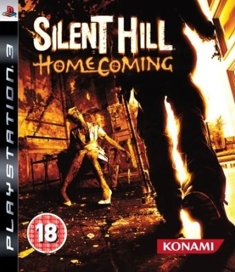

Recuerda que puedes cambiar de categoría con el menú superior o bien puedes regresar al apartado de resúmenes para buscar el título de tu preferencia

Silen Hill Homecoming
Datos generales:
Nombre: Silent Hill Homecoming.
Nombre alternativo: N/A.
Año de salida: 30 de septiembre del 2008.
Modo: Video juego de un jugador.
Plataformas: PC, PlayStation 3, Xbox 360.
Empresa: Konami.
Información
Silent Hill Homecoming fue una entrega que innovó totalmente la movilidad del personaje principal, agregando una amplia variedad de movimientos nuevos que permiten que nuestra supervivencia sea más fácil, lamentablemente, las armas que se nos dan son las mismas que están en las otras entregas: palo, cuchillo, pistola, entre otras cosas que no hacen mucho daño a los enemigos, sin embargo, nuestro personaje puede anticipar los movimientos de los enemigos para poder esquivarlos con eficacia y así recibir menos daño. También se vuelve a usar la linterna y la radio como en las anteriores entregas.
Sinópsis
En este juego controlas a Alex Shepherd un exmilitar que regresa de la guerra a su pueblo natal, cuando llega allí, se da cuenta que todo está cambiado, todos los pobladores están deprimidos y hay muchos carteles de personas que están desapareciendo, cuando Alex llega a su casa se da cuenta que su hermano, Joshua Shepherd, es una persona que está desaparecida, entonces Alex hace lo posible por investigar donde está su hermano, enfrentando a diferentes enemigos los cuales son, principalmente, personas que la familia Shepherd conoce.
Datos curiosos
A muchas personas les gusta mucho la forma en la que se desarrolló el juego, al igual de que la música es igual de buena que la de las otras entregas, lamentablemente, tiene fuertes críticas sobre la idea de lo que es Silent Hill, ya que muchos no consideran que el título sea adecuado para el juego.
Desde el punto de vista de muchos, los enemigos que hay en el juego no son tan complicados como los de otras entregas.
Silent Hill Homecoming fue uno de los últimos juegos que salieron, actualmente no hay noticias nuevas sobre un nuevo Silent Hill.